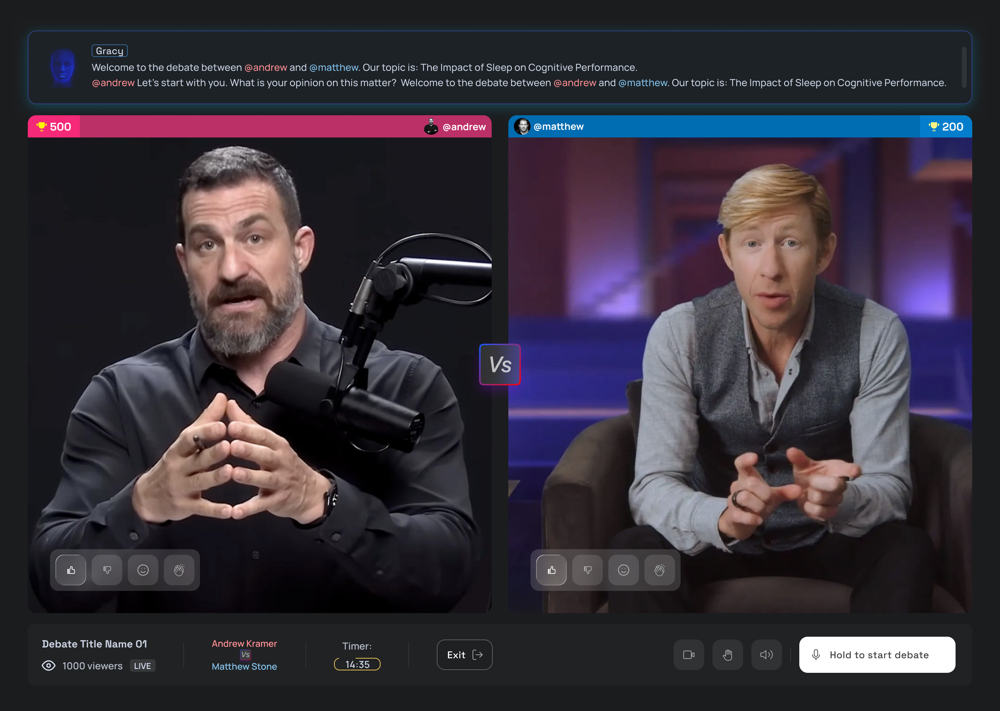

Alkiviadis Pananakakis
Designing technology from the experience back
3X FOUNDER | PRODUCT DESIGNER | DESIGN ENGINEER | EB1-A RECIPIENT
Moved to the US with a suitcase. Since then:
I became an EB1-A Recipient and 3x Founder. I've shipped products for YC startups and Fortune 500 giants, bridging the gap between 0-to-1 creativity and enterprise-grade engineering.
The Track Record:
- Founder/Builder: Bootstrapped Orama Labs (Design Engineering Studio) to 7 figures in revenue, shipping for Fortune 500s and YC startups.
- Viral Scale (Gospic): Founded a social platform that hit Top 5 on the App Store, surpassing Snapchat in local markets and winning the region's largest tech accelerator.
- The Leap: Moved to SF with a suitcase. Awarded the EB1-A Green Card for Extraordinary Ability in Tech.
- Deep Tech UX: Designed V1 interfaces for autonomous surgical robotics (Andromeda Surgical, YC S23) and integrated Computer Vision for consumer apps.
- Enterprise Architecture: Led Frontend & Design Engineering for internal tools managing $1B+ in revenue (Daikin).
- Growth Product: Overhauled product suites to scale users to 500k+, supporting a $10M Series A raise (Jointly).
Current Focus: I am building at the intersection of Consumer and Autonomous Agents. My focus is on solving the UX and latency challenges required to bring AI into real-time human interaction.
Key Designs
A focused set of end-to-end product builds, from first interaction to scalable systems.

